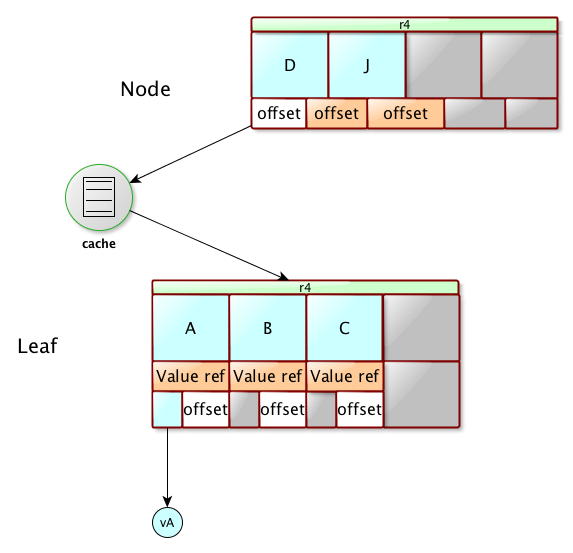

Mavibot 1.0
Downloads
Getting Started
Documentation
Support
Community
About Apache
7.1 - Logical Structure
Mavibot stores data in one or more BTrees, and defines a few more internal data structures to handle the data and BTrees.
We can have three different ways to use Mavibot :
- using in-memory BTrees (IN-MEMORY)
- using in-memory BTrees stored on disk (PERSISTED)
- storing the BTrees on disk (so called managed BTrees) (MANAGED)
In Memory BTrees
They are BTrees stored in memory : as soon as you quit your program, all the stored data will be lost. The biggest advantage is that it is fast.
As Mavibot is handling MVCC BTrees, you have to keep in mind that for each modification, we copy pages and values, hence the BTrees will quickly grow and use a lot of memory. On the other hand, copied data which are not anymore in use will be discarded automatically. The beauty of having a garbage collector is that we don’t have to take care of this copied data, i.e., if they are not any more referenced by any objects using the BTree, they will be reclaimed by the GC.
The below diagram shows the logical representation of an in-memory BTree :
Persistent BTrees
A persistent BTree is a BTree which can be flushed to disk on demand. The BTree is a in-Memory BTree, but while closing it, then content of the latest revision is serialized on disk. The data can be loaded while opening a persistent BTree.
Other than that, there is no difference between an in-memory BTree and a persistent BTree.
Managed BTrees
Managed BTrees are very different : data is guaranteed to be preserved on disk after each modification, even when the program crashes, it is guaranteed that the disk will contain everything needed to recover the BTree to the state it was in just before the crash.
This is important to understand that in managed mode, not all BTrees (of a mavibot database) are kept in memory. In other words, all nodes, except the root node, of a BTree may or may not be present at the time of accessing. Mavibot will fetch these nodes from disk when needed.
Obviously this approach has both pros and cons :
Pros :
- there is no limit on the number of elements one can store in a BTree, except on the available disk space
- A BTree will always be consistent, even if there was a crash
- data durability is guaranteed
Cons :
- reads might be costly when the data is not present in memory, due to fetching data from disk
- accessing the data from disk requires an extra layer of accessor code, this costs some extra memory
Here, this is just a question of tradeoff : depending on the existing memory size, and the level of robustness needed, one may decide to go for an in-memory BTree, a persistent BTree or a managed one. Most of the time, though, managed BTree is what you want to use.
Also note that we use internal cache to speed up the data access. This cache and its size can be configured.
Managed BTrees are stored using Nodes and Leaves. A Node contains only keys or references to underlaying nodes or leaves. A Leaf contains keys and values. As we don’t want to eat too much memory, the references to nodes, leaves, keys and values are stored as offset, read and translated to java objects on demand. For instance, we keep an offset to a key until someone needs to access the key, then we deserialize this key and store it in memory. This is the very same for references to nodes, leaves or values.
Here is a picture describing this structure :

In this BTree, only two pages are present in memory : one node and one leaf. In these pages, the keys aren’t yet objects, they are pointing to the page’s raw data, except for the D key and it’s value, they were loaded and deserialized.
Here each element, contains an offset and the byte[] of the serialized value or the deserialized value if the value has already been accessed.
User’s BTrees
These are the BTrees that are created by the user and these trees hold the data.
Special BTrees
These are the two special BTrees used internally to manage the revisions and the copied pages.
Revision tree
Mavibot uses this tree to keep track of each active revision, so that a search can work with a specific revision. The idea is that when a search starts, it uses the latest revision, but while the search is being processed a new modification can occur which creates a new revision. And also sometimes, we may want to keep a revision active for quite a long time.
This revision BTree manages the revisions of all the managed BTrees. The key of the revision btree is a combination of the BTree name and its revision.
When a revision is not anymore used, it can be removed from the revision BTree.
Unlike all other user btrees the revision BTree is not a MVCC BTree. In other words, only the latest revision of the revision btree is preserved(i.e, all the modified pages are immediately freed)
Copied pages BTree
Once a new revision is created, the pages that were copied are not anymore in use except if the revisions they are associated with are still in use. These pages cannot be discarded and moved to the free list until the associated revision is free.
A dedicated BTree is used to keep track of the copied pages, which will be reclaimed and moved to the free pages list once the associated revision gets released.
Managing the free pages
There is a mechanism to manage the PageIO that are not anymore in use. This is a linked list in which the free pages are added. Whenever a new page(s) is needed this list is searched first and reclaim as many PageIOs as needed - until the end of this list is reached. When a page gets freed that will be added at the end of the free page list.
Note that only logical pages are released, which may be stored in many PageIOs. These PageIOs are already linked, hence while adding this logical page to the free page list, the last existing free PageIO will be modified to point to the first freed PageIO of this logical page, and update the pointer of the last free page to the last PageIO of this logical page.